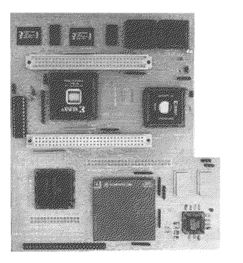

Previous
Next
TOC
Die Barracuda 040 von Wizztronics
Die Barracuda 040 ist eine Beschleunigerkarte für den Falcon030 mit
einer MC68LC040 CPU die mit 33MHz getaktet wird und nebenbei über 2
VME Bus Slots verfügt. Optional kann eine Erweiterungskarte aufge-
steckt werden die über maximal 128 Megabyte Ram verfügt, welches 32
bittig organisiert ist und mit 0 Waitstates angesprochen wird.
Es kann durchaus vorkommen das der Rechner nicht stabil läuft, in
diesem Fall sollte die Mainboard CPU ausgelötet und entfernt werden.
Es hat sich gezeigt das teilweise bei abgeschalteten Mainboard CPUs
noch die Interruptleitungen aktiv sind und sich die CPU so in den
Bus schaltet und dort für verwirrung sorgt -> Absturz.
Sollte der Rechner immer noch nicht stabil laufen, sollte man nach
dem auslöten mal die Lötpads die parallel zum Netzteil verlaufen mit
einer Lupe (mindestens 4x) nachkontrollieren, da ist garantiert
irgendwo Lötfett oder sonstwas vom Lötzinn zwischen zwei Pads geraten
und sorgt für Kapazitive Lasten an den dortigen Signalleitungen.

Kapitel Die Barracuda 040 von Wizztronics, Seite 1